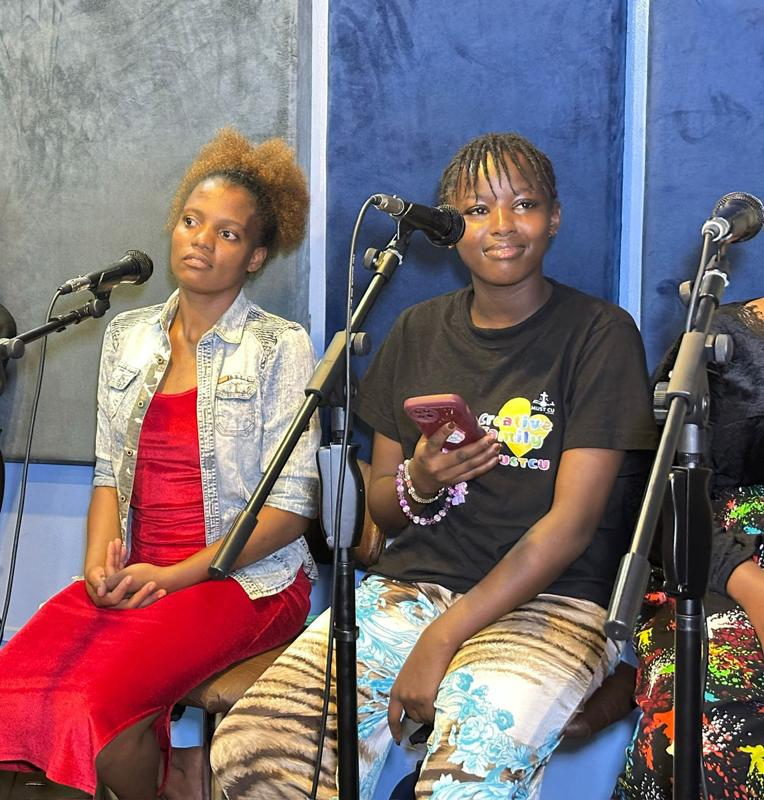

Musical Excellence
High-level artistry, original songwriting, and diverse genre exploration.
Worship • Outreach • Excellence
The Ablaze In Christ Band is a music ministry devoted to glorifying God through powerful worship experiences, soul-winning, live ministry moments, and a sound that bridges cultures, generations, and communities.
About The Band
The Ablaze In Christ Band exists to glorify God by blending high-level musicality with soul-winning, creating diverse worship experiences — from spontaneous street moments to global cultural explorations.
Beyond performance, the band is committed to the holistic growth, welfare, and recorded legacy of the ministry, building a strong foundation for the next generation of worship teams.
High-level artistry, original songwriting, and diverse genre exploration.
Every sound, stage, and social platform points back to the Gospel.
Re-imagining worship through global sounds to reach wider audiences.
Fellowship, welfare support, mentorship, and shared spiritual growth.
Vision Statement
Re-imagining worship through cultural diversity and musical excellence to foster spiritual transformation and provide a blueprint for the next generation of worship teams.
Mission Statement
We exist to blend excellence with evangelism, creating worship experiences that transform lives while prioritizing outreach, member welfare, creative growth, and a recorded ministry legacy.
Core Pillars & Strategic Objectives
Street worship, praise events in unreached spaces, spirit-led moments, and a deep commitment to soul-winning in every setting.
Live recordings, in-house gatherings, outdoor worship sessions, and intimate Tiny Desk style concerts for impact and global reach.
Original songwriting, genre exploration, vocal training, technical practice, and strong spiritual and professional mentorship.
Fellowship, welfare support, funding stewardship, and an internal culture that strengthens every member of the ministry.
Creating voice-part references, worship resources, and a clear identity that serves churches and future worship teams.
Ministry Moments
The band curates multiple ministry formats to serve different communities and environments while maintaining excellence and spiritual authenticity.
Professional live audio and video sessions for global distribution.
Calm and high-energy outreach moments in strategic public spaces.
Partnerships with churches, concert halls, and ministry friends.
Intimate performances that highlight musicality and spiritual depth.
Gallery

Join The Sound
Whether for a concert, worship gathering, collaboration, outreach event, or live recording, The Ablaze In Christ Band is building moments that point people to God.
Let’s ConnectContact
Based in Nairobi, Kenya, The Ablaze In Christ Band is open to ministry invitations, collaborations, worship events, recordings, and outreach partnerships.
Nairobi, Kenya